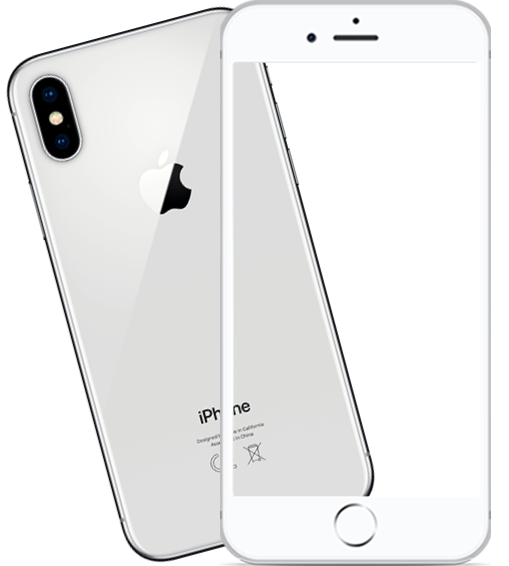
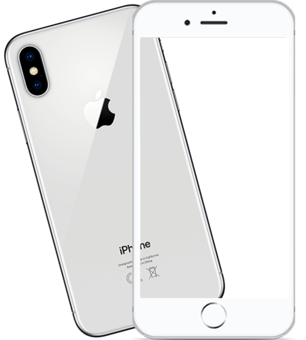
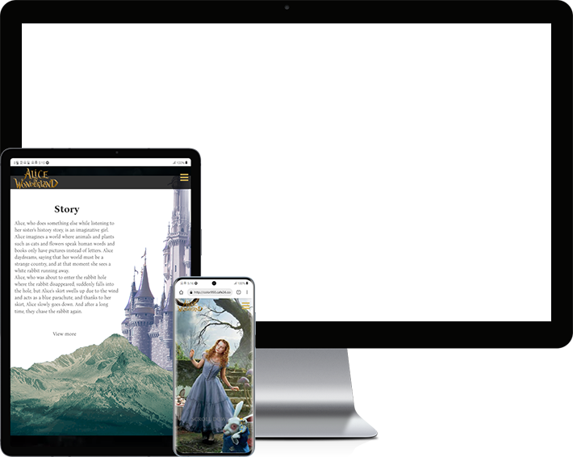
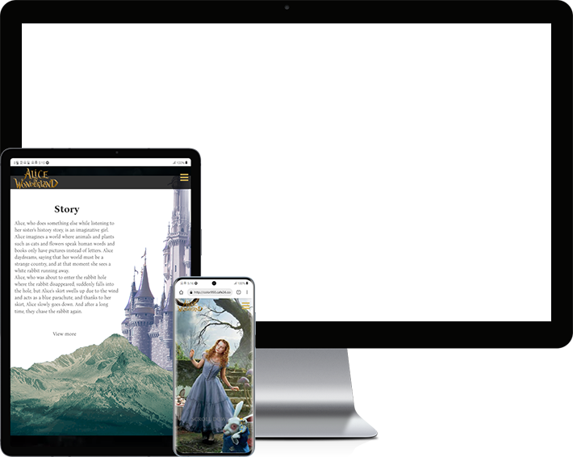
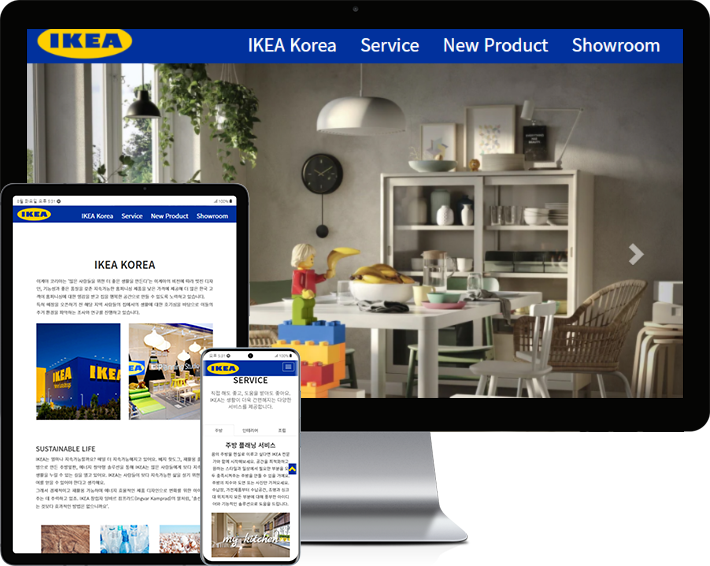
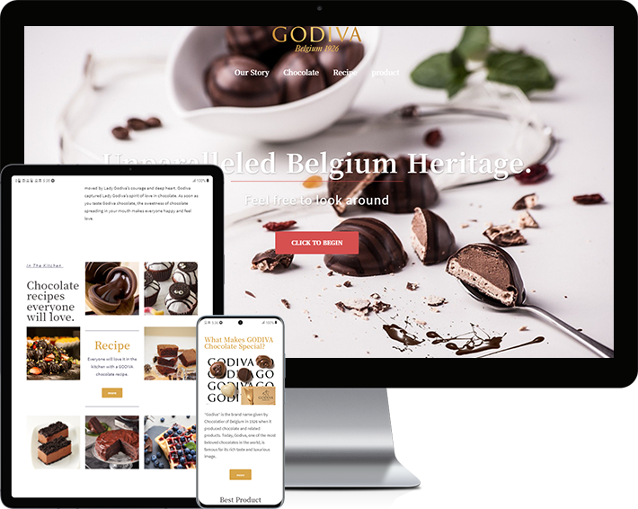

profile
- 장희원
- 지원부문 : WEB PUBLISHER
- 생년월일 : 1995. 09. 11
- 연락처 : 010 - 2674 - 5562
- 이메일 : qksksk092@naver.com
- 사용기술 (Skills) : HTML5, CSS3, CSS전처리기(LESS/SASS), JavaScript, jQuery, 비동기처리(JSON/AJAX), 반응형 Framework(Bootstrap), CMS(WordPress), PHP, MySql, github
- 사용기술 (Design) :Adobe Photoshop


무림페이퍼 Desktop
xhtml으로 구현되어있던 기존사이트를 html5/css3를 사용하여 트렌드를 반영한 디자인으로 새롭게 구현하였습니다. 이미지로 표현되어있던 텍스트를 모두 변환하고 누락된 alt 속성을 채워, 웹표준을 준수하고 접근성을 높이는 방식으로 개선하였습니다.
- 제작기간
- 2021.05.01 ~ 2021.05.30 (약4주)
- 제작스킬
- HTML5, CSS3, JavaScript, jQuery, JSON, AJAX, PHP, MySql, Adobe Photoshop, W3C 웹표준 마크업 검사, 웹접근성검사(K-WAH), 크로스브라우징 완료
 

무림페이퍼 mobile
PC용으로 구현된 기업형 무림페이지를 모바일 기기에 적합한 UI를 적용하여 새롭게 구현한 모바일용 웹입니다. 마우스가 아닌 사용자의 터치 이벤트를 중점적으로 제작하였습니다.
- 제작기간
- 약 2주
- 제작스킬
- HTML5, CSS3, JavaScript, jQuery, JSON, AJAX, PHP, MySql, Adobe Photoshop, W3C 웹표준 마크업 검사, 웹접근성검사(K-WAH), 크로스브라우징 완료
 

이상한 나라의 앨리스 Responsive
다양한 디바이스 해상도에 따라 변하는 반응형 사이트로 영화의 분위기와 이미지를 고려하여 시각적인 부분을 강조하였습니다.
- 제작기간
- 약 2주
- 제작스킬
- HTML5, CSS3, JavaScript, jQuery, Adobe Photoshop, W3C 웹표준 마크업 검사, 웹접근성검사(K-WAH), 크로스브라우징 완료

IKEA bootstrap
부트스트랩을 사용한 반응형 사이트로 웹표준과 웹접근성을 준수하여 기업의 특색에 맞추어 제작하였습니다.
- 제작기간
- 약 3일
- 제작스킬
- HTML5, CSS3, JavaScript, jQuery, Adobe Photoshop, W3C 웹표준 마크업 검사, 웹접근성검사(K-WAH), 크로스브라우징 완료

GODIVA wordpress
워드프레스(CMS)를 사용한 반응형 사이트로 기존의 홈페이지에서 무분별하게 나열되었던 정보를 한눈에 보기 쉽게 정리 하였습니다.
- 제작기간
- 약 3일
- 제작스킬
- HTML5, CSS3, JavaScript, jQuery, Adobe Photoshop, W3C 웹표준 마크업 검사, 웹접근성검사(K-WAH), 크로스브라우징 완료